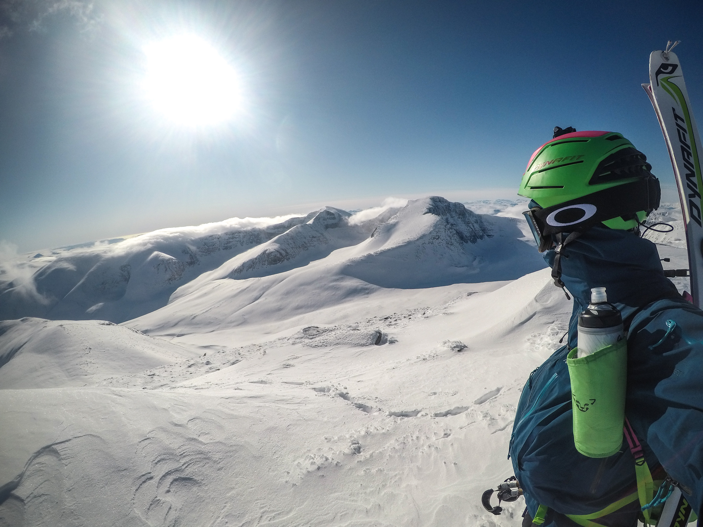
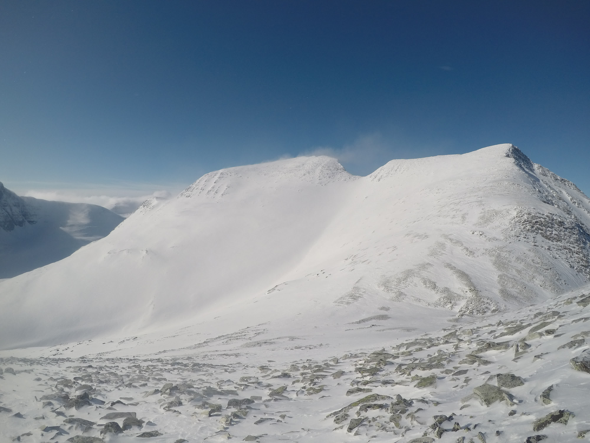
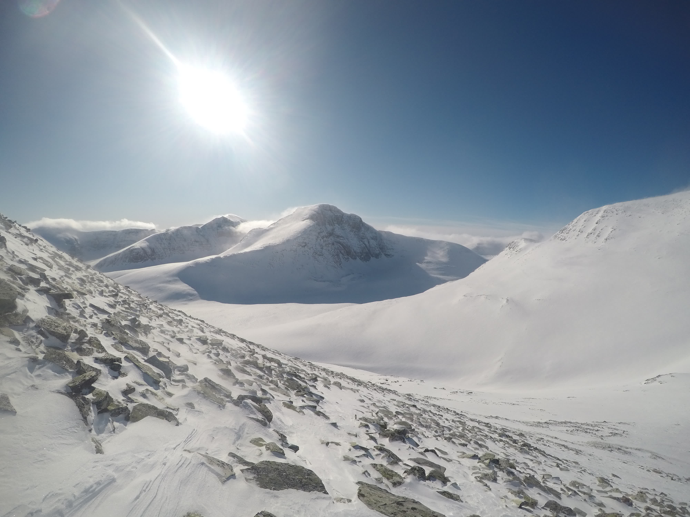
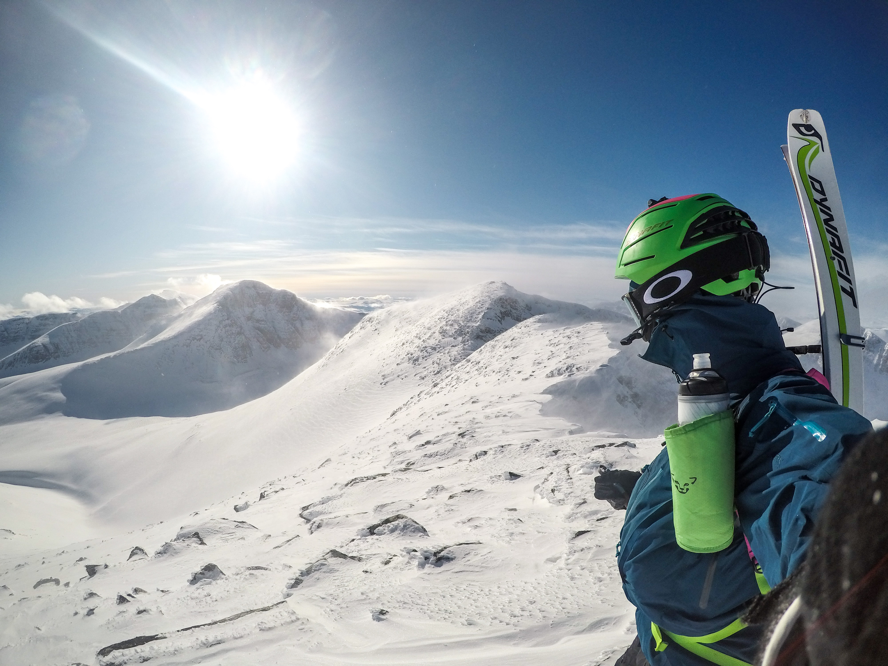
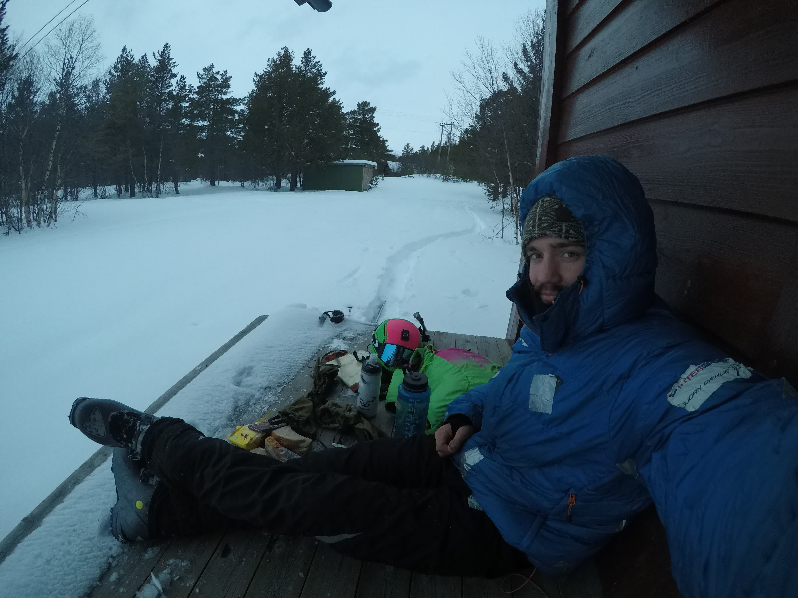

Tidlig i mars hadde det kommet unormalt mye snø i Rondane, og jeg utnytta muligheten til å dra på topptur i området. Nederst på sida ligger en video fra turen.
På vei oppover bjørkeskogen.På toppen av Høgronden med utsikt mot Rondeslottet.De to Midtrondene i sikte.Flanken til høyre hadde jeg opprinnelig tenkt å stå ned, men der var det stor fare for å løse ut skred.På toppen av Midtronden Aust, med utsikt mot Midtronden Vest.Sola nærmer seg horisonten, rett over Rondeslottet.Nede igjen ved Gammelgarden.